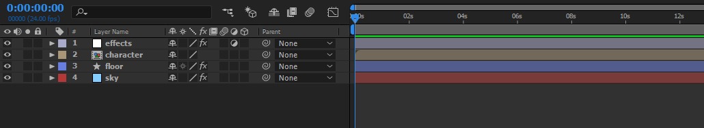
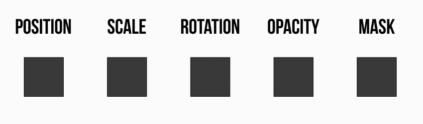
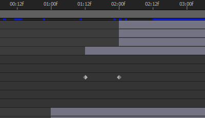
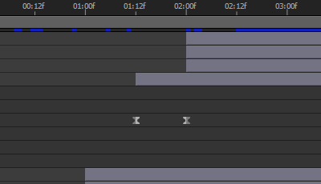

Digital Animation Concepts
From traditional to digital
So far we've been looking at how animation was done traditionally, with hand-drawn illustrations done frame by frame, and the principles that guide this process to create the illusion of movement.
While some people may see traditional and digital animation as two different kinds of animation, the truth is that one is simply an evolution of the other. Both are based on the exact same principles, but digital animation uses computer programs to simplify some of its processes.
Some of these programs still try to replicate the hand-drawn, frame by frame experience, but most modern animation programs use a different approach that greatly speeds-up the animation process. One of these programs is Adobe After Effects, and this is what we will be using in this course.
2D animation is just one of the many capabilities of After Effects. For this reason the program can be a little bit overwhelming at first. Please watch this introductory video to have a better sense of the software's interface and and general functionality before we can continue to our next exercises.
Compositions
Compositions (or comps) are containers of elements inside of After Effects. Comps have their own independent timelines and layer hierarchy. Based on the complexity of your animation you can have one comp, or hundreds of them. It all depends on the number of elements that needs to be animated.
Comps can have many different roles in you project. Since comps can be nested, they are essential to organize your animation and create a hierarchy inside After Effects. As an example, you can have an animated bouncing ball element in one comp, and a background environment animation in another. You can group and edit these two animations inside a third comp, that in this case will be a scene. If you have multiple scenes, you can then group and edit them all together in a bigger comp, which could contain your entire animation.
The first thing you do when starting a new project in After Effects is create a new composition, and assets from Photoshop and Illustrator are imported in After Effects as compositions, giving you access to their separate layers and timelines.
Layers
Much like in Photoshop and Illustrator, layers in After Effects are used to define an element in a scene, and if that element will be in front or behind another element. Each layer can be animated separately and has its own set of animation properties.

Animation Properties
Every element in After Effects has a few base properties that will define its animation. The most important properties are position, scale, rotation and opacity.
Here is a quick example of these properties in After Effects:

- Position defines where the element is on screen over time.
- Scale defines the size of the element over time.
- Rotation defines the degree of rotation of the element over time.
- Opacity defines the transparency of the element over time.
These properties cover pretty much all of the animations we will create, and when coupled with masks, they consist of the core of digital animation and motion design.
How to access animation properties in After Effects: https://drive.google.com/open?id=1VoHUsqFKbggAP4p7NS8uy6Mb9qfjSxNf
A mask is not an animation property, but masks are very important and are used extensively in digital animation. They are a little bit different because they need two elements to work: the animation element (in the example above, the square) and the mask itself (the rectangle that animates over the square).
How to use masks in After Effects: https://drive.google.com/open?id=1cCvOG6OQVuorO-W6-NbUImJNLEBp0IMQ
Keyframes
In traditional animation, we generally think in terms of frames and how they are defined by importance (keyframes, extremes and inbetweens). These concepts are also important in digital animation, but there is a shift in the way you work and understand them. For example, once you create keyframes for an element in After Effects, the software will automatically fill in the gaps with inbetweens. Most of the time, it is not necessary to worry about extremes and inbetweens at all because a lot of the work is done on the keyframes themselves, through speed and easing options.
In After Effects, when you create a keyframe, that keyframe is automatically set as a linear keyframe.
This is what linear keyframes look like:

When you have two linear keyframes like that, it means that the timing and spacing between those keyframes is constant and that animation doesn’t have any kind of easing.
To apply easing to your keyframes all you have to do is select the keyframes, click with the right mouse button, then select Keyframe Assistant > Easy Ease. Your keyframes now will look like this:

This will create an effect as if the inbetweens are grouped closer to the keyframes, creating smoother acceleration and deceleration. The great thing about easing keyframes in After Effects is that it can be applied to any animation property: position, scale, rotation and even opacity.
Rendering
Rendering is the process of finalizing and exporting your animation as a video file that can be viewed outside of After Effects. It involves taking all of the layers, compositions and effects you have in a project and flattening everything into individual frames. Depending on the number of layers, compositions and effects a project has, rendering an animation can take just a few seconds, or a very (very) long time, so don't wait until the last day on your deadline to start rendering an animation.